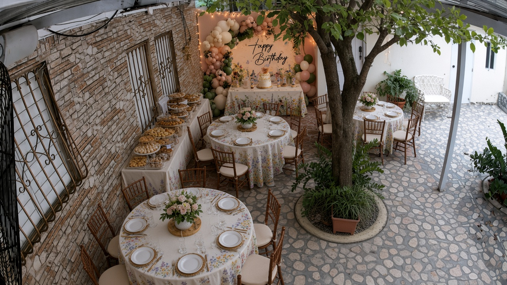

R1–R6 on brown (48) · R7–R8 around the fixed tree on gray (16) · +1 chair = 65. Tables drawn as 60″ to the 10 ft scale.

Render from TV wall toward cake — tree remains on the gray side near the camera end; family rounds on brown.
What changed
- Tree left in its real gray-side position (TV-end), not moved to the cake corner
- No honor table — all family at the same rounds
- Tables are 60″ so you can judge real fit
How 65 fits
- 6 rounds on brown under the roof → 48
- 2 rounds on gray around the tree → 16
- +1 chair on any table → 65
- Keep ~9 ft clear per table (table + chairs)